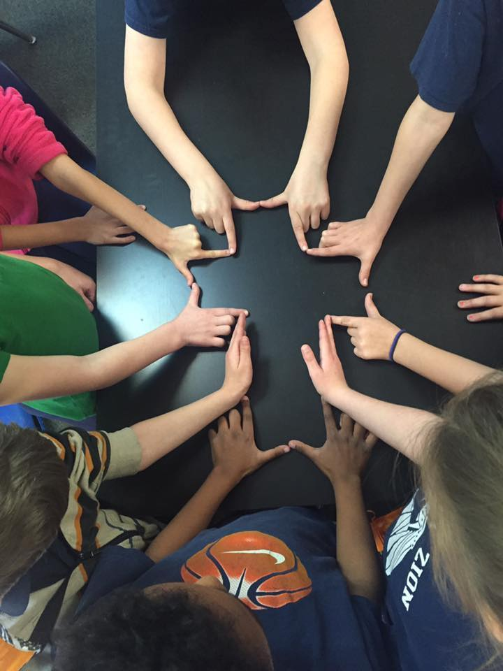
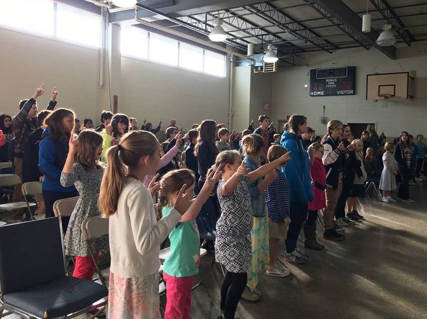

MY FAVORITE
I love all of the events at Mount Zion, but my favorite has to be the High School Spring Formal. The first one happened my freshman year, and I just fell in love with it. I ended up planning it every year after that as a part of Student Council. Everyone has a great time getting to dress up, dance, and have dinner together. Each year has a different theme, and they can get pretty creative. Some of my best memories were made during Spring Formal.
Alexus Lefort
Timing
Dates for 2017-2018 School Year
| Event | Date | Description |
|---|---|---|
| Mystery Night | August 10 | Mystery Night is a time where the High School gets together for a night. No one other than Student Council knows where the destination is until they arrive. |
| Sneak Peak | August 24 | Each student and their family come to the school to take a look at their classroom and learn what to expect for the coming year. |
| Moose River Outpost | August 29-September 1 | The high school roadtrips to Jackman, Maine for a few days of learning in nature. On Thursday they take a white water rafting day trip, which is a highlight. |
| Harvest Party | October 5 | A high school event to ring in fall. |
| Christmas Concert | December 1 | The whole school participates in a fun night of Christmas carols and remembering the true meaning of Christmas. |
| High School Winter Soiree | January 27 | Dance, Eat, and Make Memories! |
| Sweatheart Dance | February 8 | A fun family event to celebrate Valentine's Day |
| workcampNE | April 15-20 | The high school gets a full week of local missions as they partner with workcampNE to repair homes in the Greater Manchester area. |
| Spring Formal | May 5 | The last big social event of the school year for the High School. |
| Eden Exposition | May 18 | Throughout the year each student creates a masterpiece. Projects have ranged from artwork to a lawn chair to a computer. |
| Spring Arts Gala | May 31 | A walkthough of art that has been made by students throughout the year as well as a performance by all of the music classes. |
| High School Graduation | June 8 | A final fairwell to the seniors as they receive their dimplomas and dance their way out of the auditorium as high school graduates.. |

